Simplified configuration of Centreon with IMP¶
What is IMP?¶
IMP (Instant Monitoring Platform) is a solution to allow to reduce the TTM (Time To Monitoring). Indeed, IMP allows to reduce time to deploy your monitoring and reduce time to maintain in working condition your Centreon platform. Templates of monitoring ready to use including monitoring procedure that allow to start your monitoring less than 30 minutes after the installation of your Centreon platform.
Centreon Plugins’ project offer a large range of functionality and is one of the richest in the market: +170 environments is around 2000 monitoring indicators which allow to deploy your monitoring easily and quickly.
Want to use IMP? Please follow the instructions below.
Prerequisites¶
1. Centreon 3.4
To use Centreon IMP you need the latest version of Centreon 3.4. This version includes Centreon Web 2.8.
You can install Centreon 3.4 using the ISO of Centreon or by upgrading your Centreon platform. Please read documentation to install or upgrade your platform.
2. An Internet access
Your Centreon central monitoring server must have an access to Internet. This access allows to get the list of available Plugin Packs and to install those on your platform.
Note
If your server doesn’t have a direct access to Internet, you can configure a proxy to access to Internet. The proxy configuration is available since Centreon web 2.8.2 version. If you don’t have this version, please perform an upgrade of your platform.
Link your Centreon platform to Centreon IMP¶
To get the Plugin Packs, your Centreon platform must have an access to Centreon user portal.
Without Centreon user portal, your Centreon server will have access to 6 Plugin Packs. If you create a Centreon user portal account and you use it to connect your Centreon platform, you will have access to 5 more Plugin Packs. By subscribing to Centreon IMP offer, you will have access to +170 Plugin Packs is around 2000 monitoring indicators which allow to deploy your monitoring easily and quickly.
| Without Account | Simple Account | With subscription | |
|---|---|---|---|
| 6 base Packs | x | x | x |
| 5 added Packs | x | x | |
| +150 Packs | x | ||
| total | 6 packs | 11 packs | +170 Packs |
What are Plugin Packs available for each level?
- Standard Plugin Packs:
- Cisco standard (SNMP)
- Linux (SNMP)
- MySQL
- Printer standard (SNMP)
- UPS Standard (SNMP)
- Windows (SNMP)
- Centreon (central)
- Centreon DB
- Centreon Poller
- Centreon Map
- Centreon MBI
- With Centreon user portal account:
- DHCP
- DNS
- FTP
- HTTP
- LDAP
- With IMP subscription: All the packs in the catalog.
Note
Yes 11 is different than 6 but we prefer to do not count Centreon Plugin Packs to monitor your Centreon platform.
To connect your Centreon platform to Centreon user portal, please follow instructions below:
1. Go to Centreon user portal and create your account¶
Go on Centreon web site on subscription IMP page. Click on “Try it” on the first column of the comparative table of offers.
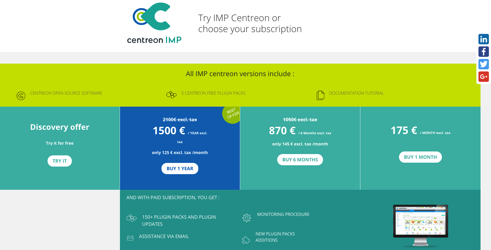{kind=link}
Create your user account. This account will be used to link your Centreon platform to the Centreon IMP to get Plugin Packs.
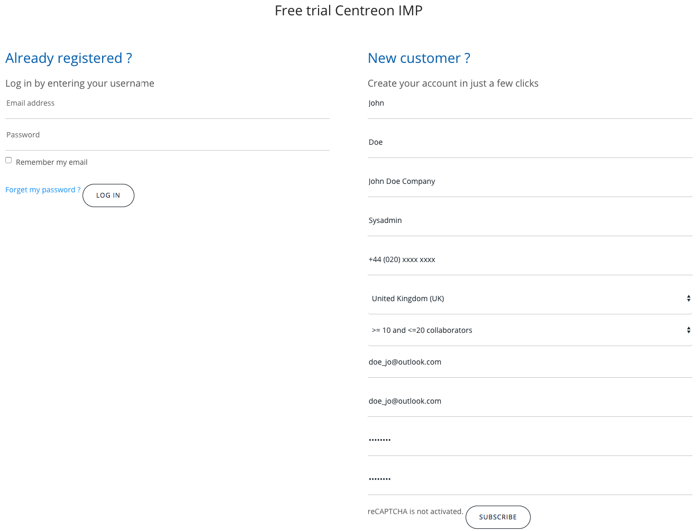{kind=link}
Your account is now available. You can link your Centreon platform.
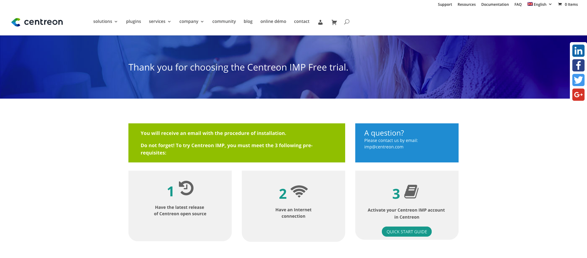{kind=link}
2. Link your Centreon platform¶
Note
If the Administration -> Extensions -> Subscription is not available on your Centreon, please go to the Administration -> Extensions -> Modules menu and install the following modules by clicking on the “install” icon on the right:
- centreon-pp-manager
- centreon-license-manager
Go to the Administration -> Extensions -> Subscription menu and connect your Centreon Platform using your Centreon user portal credentials. The credentials are your account to access to Centreon user portal.
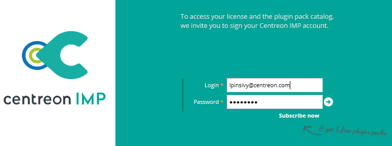By clicking on the arrow icon next to “Password” field you will connect your Centreon platform to Centreon portal. The creation of an account on the Centreon user portal is free and allow to access to 11 Plugin Packs.
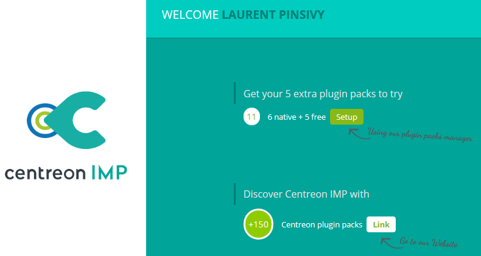Your platform is now connected: you can access to 6 more Plugin Packs.
Note
With your account you can connect multiple platforms at a time to do your tests.
3. Discover the catalog and install your first Plugin Packs¶
To install Plugin Packs, click on the Setup button to access to the Plugin Packs catalog, or go to the Configuration > Plugin pack menu.
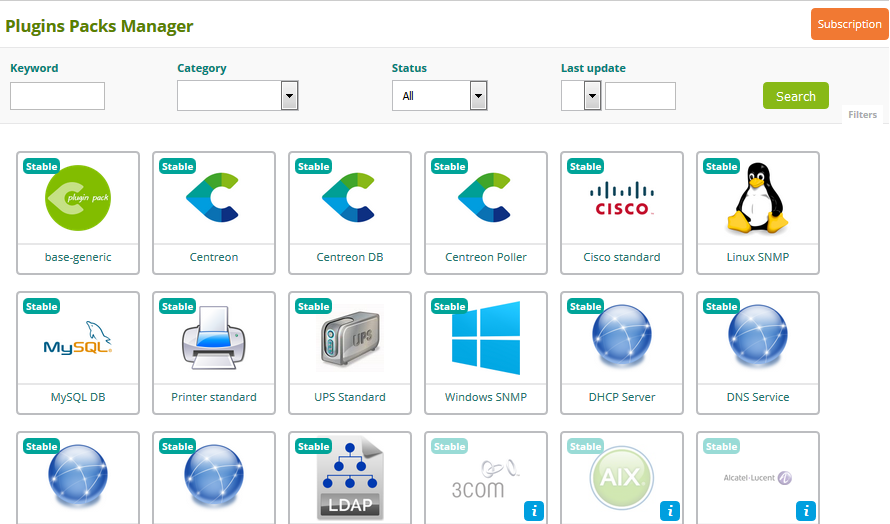List of Plugin Packs appears. Only part of the catalog can be accessed according to your subscription. If your subscription is no longer valid or if you use Centreon IMP trial offer, only the first 11 Plugin Packs are available. The non-available Plugin Pack will be freeze.
You can search Plugin Packs using:
- Keyword
- Category
- Status
- Last update
Yo access to the description of a pack, click on its icon.
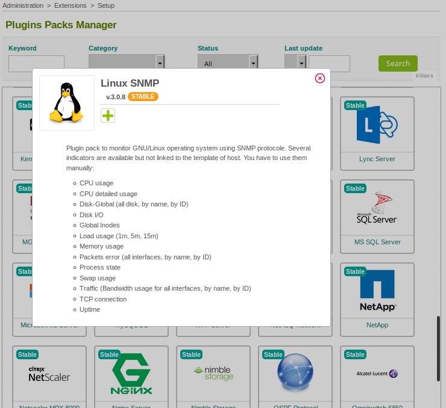To install a pack, click on installation icon.
| before installation | after installation |
| 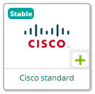 | 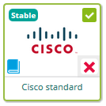 |
Don’t forget that each pack use a plugin to work. Each monitoring procedure will help you to install the plugin needed.
Note
Install plugins on each poller required. Otherwise your supervision will not work.
4. Get your subscription!¶
You can subscribe to IMP according different period of renewal: 1 month, 6 months or 12 months. The price decreases according to the duration of commitment.
After subscribing, go to the Administration -> Extensions -> Subscription menu and connect your Centreon platform using your Centreon user portal credentials.
IF you purchased a subscription you can link your Centreon platform to your subscription. To do this please click on the “Link” button.
Select your subscription and click on “Link” button to valid this step.
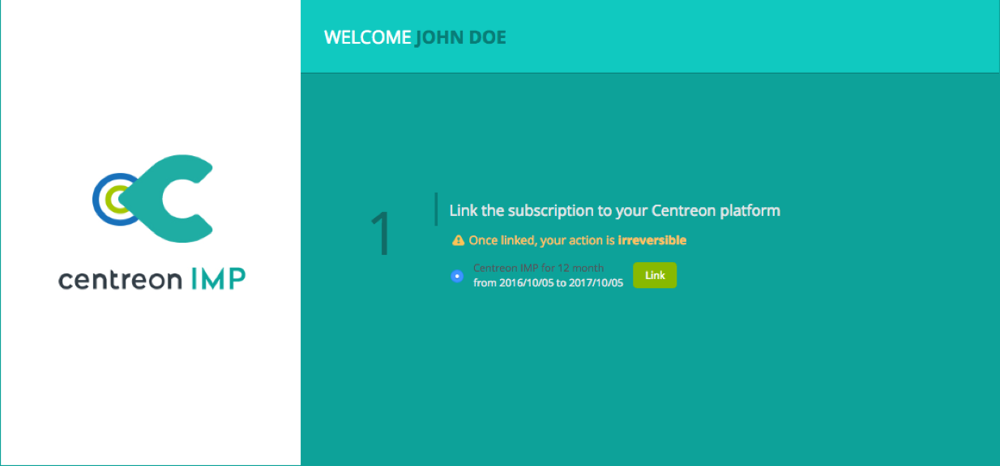{kind=link}
Please confirm this action.
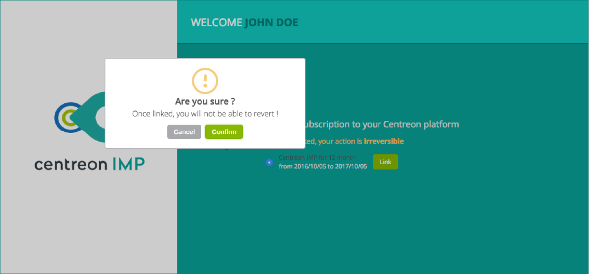{kind=link}
Now you have access to all Plugin Packs available in the catalog. Click on the “install” button to start the installation of needed Plugin Packs.
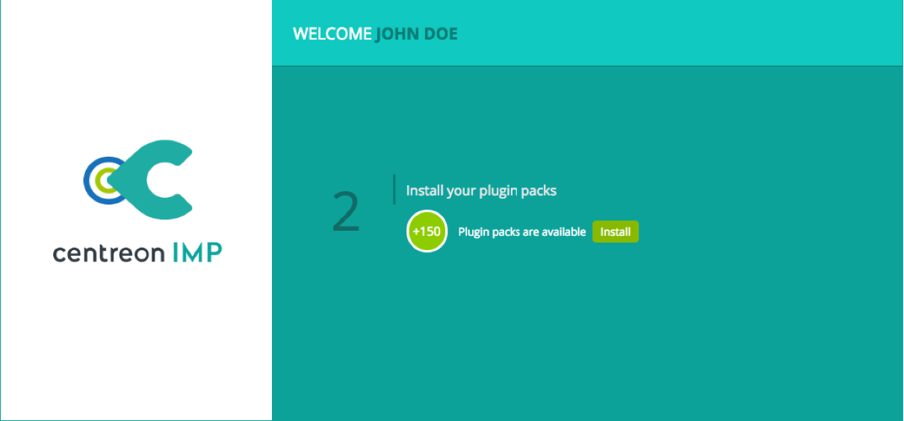{kind=link}
Your Centreon IMP subscription ensures that the Plugin Packs are updated as technology requirements and needs evolve. This may include enhancements or new additions.
If you decide to stop your Centreon IMP subscription, you will not have access to these updates and additions. The Plugin Packs you have been using will not be uninstalled.
Note
If you wish to move your IMP subscription to another Centreon server, you need to ask Centreon customer support. We didn’t yet add this functionality to your Centreon web site. Please contact us: imp at centreon dot com.
Note
If you have some difficulties to use IMP you can contact your technical team using imp at centreon dot com email.